using StatsBase, StatsPlots
using DataFrames, CategoricalArrays, Chain
using RDatasets4 Bivariate data
We now consider two variables measured for the same observation, or bivariate data. The combinations of numeric data or categorical data lead to different means to describe and visualize the sets of data.
We load our basic suite of packages:
In the following, we use the widely used iris data set which has numeric measurements of sepal and petal width and lengths for 3 species of irises.
iris = dataset("datasets", "iris")
first(iris, 3)3×5 DataFrame
| Row | SepalLength | SepalWidth | PetalLength | PetalWidth | Species |
|---|---|---|---|---|---|
| Float64 | Float64 | Float64 | Float64 | Cat… | |
| 1 | 5.1 | 3.5 | 1.4 | 0.2 | setosa |
| 2 | 4.9 | 3.0 | 1.4 | 0.2 | setosa |
| 3 | 4.7 | 3.2 | 1.3 | 0.2 | setosa |
There are 50 cases per species:
combine(groupby(iris, :Species), nrow)3×2 DataFrame
| Row | Species | nrow |
|---|---|---|
| Cat… | Int64 | |
| 1 | setosa | 50 |
| 2 | versicolor | 50 |
| 3 | virginica | 50 |
4.1 Multiple samples
A common scenario is when data for a measurement is collected across multiple levels of a factor to see if there is something about that factor that has an effect on the measurement. As measurements typically have fluctuations, this “effect” must be understood relative to some understanding of the underlying variability. To gather that, a probability model might be used. For now, we content ourselves with common graphical comparisons, which can be used to distinguish large effects.
First we graphically explore one measurement, PetalWidth, for the 3 different species. A typical question might be, is the average petal width the same across the three species?
The data storage in iris is tidy data, each row is an observation, the PetalWidth is the variable. Were the data in a long format with a variable for each level of the factor, the stack command would prove useful to tidy the data.
The graphics are created by splitting the data along the levels of the factor and then applying the graphic to the univariate data for each group. For this task, the StatsPlots package is useful.1
4.1.1 Grouped dot plots
A dot plot is a useful graphic to show the distribution of values on a number line when the data is sufficiently spread out so as not to overlap too much. The basic graphic is \(1\)-dimensional, adding a second dimension for the grouping variable allows easy comparisons.
Here we discuss dot plots for different levels of a factor. In the iris data set, to create plots by each species (Figure 4.1), allowing a comparison of the distribution of the \(x\) variable over different levels of a factor. The following illustrates the steps done, but we will see next that such effort is unneeded as the StatsPlots recipes wrap up this data manipulation, in this case with a method for dotplot.
byspecies = groupby(iris, :Species)
p1 = StatsPlots.plot()
for (i, k) in enumerate(keys(byspecies)) # iterate over keys
species = k.Species
xs = byspecies[k].PetalWidth
ys = i .+ one.(xs)
dotplot!(p1, xs, ys; label=species)
end
p1;The identification of the species after grouping is a bit awkward, but the idea is we split the data, then create a dot plot for each level of the grouping variable, :Species.
This is more easily done by passing :Species as the \(y\) value to dotplot, in which case the categorical variable is used for grouping.
p2 = @df iris dotplot(:PetalWidth, :Species; legend=false);The @df macro was used as a convenience. This replaces the symbols in the expression with the corresponding column in the specified data frame.
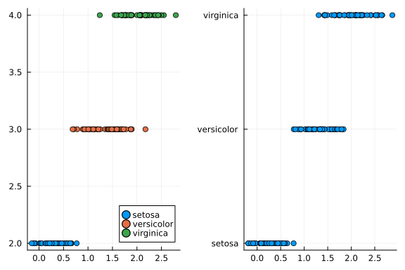
dotplot with labels used to mark the species.Putting the categorical variable first, presents a graphic (Figure 4.2) which uses jittering to disambiguate equal measurements in a species:
@df iris dotplot(:Species, :PetalWidth; legend=false)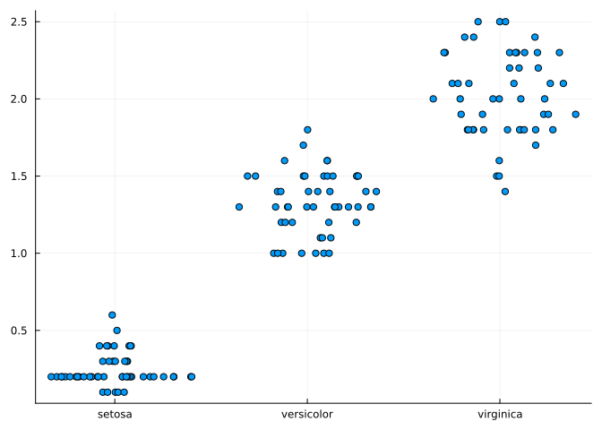
x position, and the numeric data was jittered left and right.Regardless of how the graphic is produced, there appears to be a difference in the centers based on the species, as would be expected – different species have different sizes.
4.1.2 Boxplots across groups
Grouped boxplots are made in a similar manner to the last example using boxplot (Figure 4.3); we use the categorical variable indicating grouping in the x position:
@df iris boxplot(:Species, :PetalWidth; legend=false)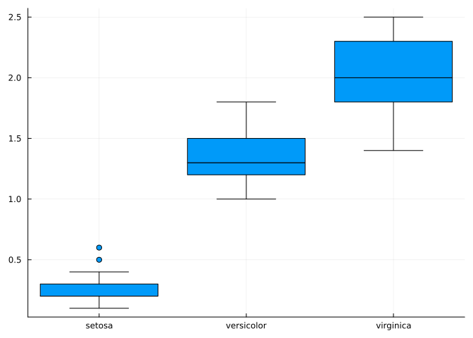
Ode to the boxplots
The box plot is a great graphic for comparing values across the levels of some factor. Each boxplot shows the center (the median), the range (the IQR), the shape (well basic symmetry about the median), the outlying values (with its identying rule of 1.5 IQRs beyond \(Q_1\) and \(Q_3\). The only drawback is boxplots can’t show multi modal data. But if the factor is the cause of that, then the collection of boxplots is great for comparison.
4.1.3 Violin and density plots
A violin plot is like the boxplot, only it is wider where more data is concentrated, and smaller where less is. It uses a sideways density plot to summarize the data, whereas a boxplot only uses the five-number summary. The violin function creates these (Figure 4.4):
p2 = @df iris violin(:Species, :PetalWidth; legend=false)
@df iris dotplot!(p2, :Species, :PetalWidth; legend=false)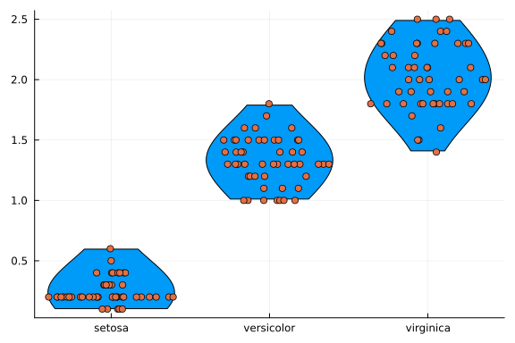
As illustrated for univariate data, the density function makes a density plot. There is an option for grouped data.
As seen below, the grouping variable is a named, not positional argument. In Figure 4.5 the left plot is done without grouping, the right one with grouping by species. The left plot shows a multi-modal distribution, which suggests, as we already have seen, that there is a mixture of populations in the data. There appear to be two modes, with a hint of a third. The separation between the “setosa” species and the other two is greater than the separation between the two others.
p1 = @df iris density(:PetalWidth; legend=false)
p2 = @df iris density(:PetalWidth, group=:Species);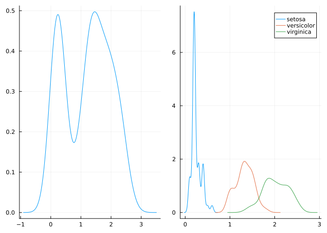
PetalWidth and PetalWidth by Species. The left graphic suggests multiple modes, which are revealed in the right graphic.4.1.4 Quantile comparisons
A “quantile-quantile plot” plots pairs of quantiles from two data sets as a scatter plot to help gauge if the shape of the two distributions is similar. If it is, the data will fall roughly on a straight line. The previously discussed quantile-normal plot is identical, with the specialization that one of the distributions is the reference normal distribution.
We use this plot to check if the shape of the distribution for two different species is roughly the same. To do so, we extract the PetalWidth values for the different levels of :Species. A direct way might be indexing: iris[iris.Species .== "versicolor", :PetalWidth] or with subset: subset(iris, :Species => ByRow(==("versicolor"))).PetalWidth. In the following we group by :Species then for each group apply a \(z\)-score to :PetalWidth. From here, we can compare the 1st and 2nd and then the 2nd and 3rd group with qqplot in Figure 4.6. There is not a strong reason to expect big differences in shape.
jitter(x, scale = 0.25) = x + scale * randn(length(x))
gps = [select(gp, :PetalWidth => zscore∘jitter => :PetalWidth)
for gp in groupby(iris, :Species)]
p1 = qqplot(gps[1].PetalWidth, gps[2].PetalWidth)
p2 = qqplot(gps[2].PetalWidth, gps[3].PetalWidth);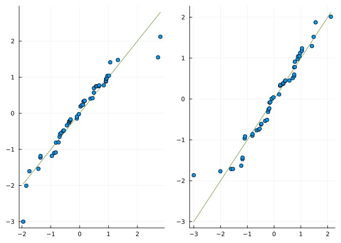
qqplot of the petal width from the versicolor and virginica species. The graphic suggests similar-shaped distributions. The data is jittered to disambiguate identical values.4.2 Paired data
We have looked at a single variable over several levels of a given factor. If the data is split along the factor, there are possibly a different number of measurements for the given level. A key statistical assumption for inference will be that these different measurements are independent.
We might express this data as
\[\begin{align*} x_{11}, & x_{12}, \dots, x_{1n_1}\\ x_{21}, & x_{22}, \dots, x_{2n_2}\\ & \vdots \\ x_{m1}, & x_{m2}, \dots, x_{mn_m}. \end{align*}\]
Now we turn our attention to data of two measured variables for a given observation. These two variables must have the same number of values, this being equal to the number of observations. Moreover, it need not be the case that the two measurements should be “independent,” indeed, the measurements are from the same case, so, for example with the iris data, if a plant has a large petal width it will likely also have a large petal length.
We might express the data mathematically as:
\[\begin{align*} x_{1}, & x_{2}, \dots, x_{n}\\ y_{1}, & y_{2}, \dots, y_{n} \end{align*}\]
Or – to emphasize how the data is paired off – as \((x_1, y_1), (x_2, y_2), \dots, (x_n, y_n)\).
4.2.1 Numeric summaries
The main numeric summary of paired data is the Pearson correlation coefficient. In terms of \(z\) scores this is almost the average of their respective products:
\[ cor = \frac{1}{n-1} \sum \left(\frac{x_i - \bar{x}}{s_x}\right) \cdot \left(\frac{y_i - \bar{y}}{s_y}\right). \]
The cor function computes this measure.
Consider again the iris data, only we select below just the setosa data and the petal attributes:
l, w = @chain iris begin
subset(:Species => ByRow(==("setosa")))
select([:PetalLength, :PetalWidth])
eachcol
end;We have the correlation computed by
cor(l, w)0.3316300408041188The correlation will be seen to be measure of linear associativity. When it is close to 1 or -1, the variability in the data is well described by a line; when close to 0, not so.
The correlation can be computed from a matrix for each pair of columns. This is done here for illustration:
@chain iris begin
subset(:Species => ByRow(==("setosa")))
select(_, names(_, Real))
Matrix
cor
end4×4 Matrix{Float64}:
1.0 0.742547 0.267176 0.278098
0.742547 1.0 0.1777 0.232752
0.267176 0.1777 1.0 0.33163
0.278098 0.232752 0.33163 1.0The Spearman correlation is the correlation of the data after ranking. It is a measure of monotonicity in the data. There are different ranking algorithms in StatsBase, the Spearman correlation uses tiedrank. It can be computed with this or with corspearman, as shown:
corspearman(l, w), cor(tiedrank(l), tiedrank(w))(0.2711413763783511, 0.2711413763783511)The primary graphic to assess the relationship between the two, presumably, dependent variables is a scatter plot:
scatter(l, w; legend=false, xlab="PetalLength", ylab="PetalWidth")
vline!([mean(l)], linestyle=:dash)
hline!([mean(w)], linestyle=:dash)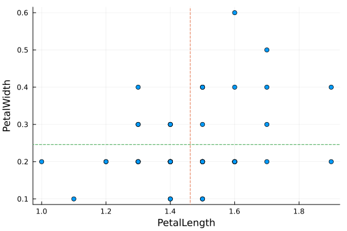
Figure 4.7 shows the length and width data in a scatter plot. Jittering would be helpful to show all the data, as it has been discretized and many points are overplotte. The dashed lines are centered at the means of the respective variables. If the mean is the center of a single variable, then \((\bar{x}, \bar{y})\) may be thought of as the center of the paired data. Thinking of the dashed lines meeting at the origin, four quadrants are formed. The correlation can be viewed as a measure of how much the data sits in opposite quadrants. In the figure, there seems to be more data in quadrants I and III then II and IV, which sugests a positive correlation, as confirmed numerically.
By writing the correlation in terms of \(z\)-scores, the product in that formula is positive if the point is in quadrant I or III and negative if in II or IV. So, for example, a big positive number suggests data is concentrated in quadrants I and III or that there is a strong association between the variables. The scaling by the standard deviations, leaves the mathematical constraint that the correlation is between \(-1\) and \(1\).
Correlation is not causation
The expression “correlation is not causation” is a common one, due to efforts by the tobacco industry to give plausible alternatives to the statistical association of cigarette smoking and health problems such as lung cancer. Indeed, in some instances correlation between two variables can be related to a lurking or confounding variable. An example might be coffee consumption is positively associated with heart disease, yet is not necessarily the cause, as smoking is associated with both variables and may be the cause.
4.2.2 Trend lines
We mentioned that the Pearson correlation is a measure of a linear association and the Spearman rank correlation a measure of monotonic association. We now discuss some basic trend lines that highlight the association in paired data, where there is response variable.
We use the language explanatory variable to describe the \(x\) variable, and response variable to describe the \(y\) variable, with the understanding that \(x\) might be experimentally controlled and \(y\) a random measured response. The “line” is an explanation of how the \(y\) values vary on average as the \(x\) values vary by the experimenter.
There are many choices for how to identify a trend line, though we will show one such way that is the most commonly used. To set it in a mathematical setting, a line can be parameterized by two values, \(y = \beta_0 + \beta_1 x\). Use the value \(\hat{y}_i = \beta_0 + \beta_1 x_i\), which is the \(y\) value of the point on the line corresponding to \(x_i\). The residual amount is usually defined by \(e_i = y_i - \hat{y}_i\). That is the vertical distance from the data point to the line. See Figure 4.8 for a visualization. One could argue that the distance to the line might be better than the vertical distance, but this choice leads to a very useful mathematical characterization.
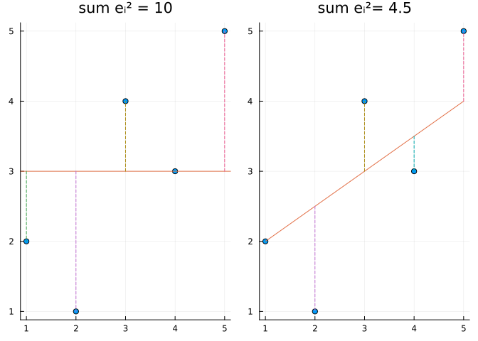
Let \(f(x)\) be some function, then a measure of the distance of the data to the line might be the sum \(\sum_i f(e_i)\). For example, using \(f(x) = |x|\), we have through findmin:
F(x) = abs(x)
resid_sum(x, y, F, b0, b1) =
sum(F, yi - (b0 + b1*xi) for (xi,yi) in zip(x,y))
j(b0, b1) = resid_sum(l, w, F, b0, b1)
xs = ys = -2 : 1/100 : 2
_, k = findmin(j.(xs, ys'))
(b0 = xs[first(k.I)], b1 = ys[last(k.I)])(b0 = 0.2, b1 = 0.0)This non-rigorously identifies the values of the coefficients that minimize the sum in \([-2,2]\times[-2,2]\) by searching for the smallest over a grid with resolution 1/100.
Using a different \(F\) changes the answer:
F(x) = x^2
resid_sum(x, y, f, b0, b1) =
sum(f, yi - (b0 + b1*xi) for (xi,yi) in zip(x,y))
j(b0, b1) = resid_sum(l, w, F, b0, b1)
xs = ys = -2 : 1/100 : 2
_, k = findmin(j.(xs, ys'))
(b0 = xs[first(k.I)], b1 = ys[last(k.I)])(b0 = -0.06, b1 = 0.21)When \(F(x) = x^2\), that is we seek to minimize the sum of the squared residuals, there is a mathematical formulation that can be solved to identify values for the constants. This is known as the method of least squares. There is a mathematical framework that this problem fits within that uses linear algebra.
Consider the \(n\) linear equations of the form \(y_i = \beta_0 + \beta_1 x_i\). Written in a column form these are:
\[\begin{align*} y_1 & = \beta_0 + \beta_1 x_1\\ y_2 & = \beta_0 + \beta_1 x_2\\ & \vdots \\ y_n & = \beta_0 + \beta_1 x_n\\ \end{align*}\]
There are 2 unknowns, \(\beta_0\) and \(\beta_1\). Were there two equations (\(n=2\)), we could solve by substitution to find an expression for these in terms of \((x_1,y_1)\) and \((x_2, y_2)\). We algebraically solve this below with the help of a symbolic math package:
using SymPy
@syms x[1:2] y[1:2] β[0:1]
eqns = [one.(x) x] * β .~ y2-element Vector{Sym}:
x₁⋅β₁ + β₀ = y₁
x₂⋅β₁ + β₀ = y₂solve(eqns, β)Dict{Any, Any} with 2 entries:
β₁ => (y₁ - y₂)/(x₁ - x₂)
β₀ => (x₁*y₂ - x₂*y₁)/(x₁ - x₂)Mathematically for the linear problem, this last line is equivalent to solving the equation \(A\beta=y\) where \(A\) is a matrix with one column of 1s and the other of \(x\):
A = [one.(x) x]2×2 Matrix{Sym}:
1 x₁
1 x₂A \ y2-element Vector{Sym}:
(x₁*y₂ - x₂*y₁)/(x₁ - x₂)
(y₁ - y₂)/(x₁ - x₂)However, it is expected that there are more than 2 data points, so the line will in general be overdetermined. Symbolically, for really small \(n\), this can be solved symbolically:
@syms x[1:3] y[1:3] β[0:1]
A = [one.(x) x]
solve(sum(e^2 for e in A*β - y), β)2-element Vector{Tuple{Sym, Sym}}:
(-x₁*β₁/3 - x₂*β₁/3 - x₃*β₁/3 + y₁/3 + y₂/3 + y₃/3 - sqrt(2)*sqrt(-x₁^2*β₁^2 + x₁*x₂*β₁^2 + x₁*x₃*β₁^2 + 2*x₁*y₁*β₁ - x₁*y₂*β₁ - x₁*y₃*β₁ - x₂^2*β₁^2 + x₂*x₃*β₁^2 - x₂*y₁*β₁ + 2*x₂*y₂*β₁ - x₂*y₃*β₁ - x₃^2*β₁^2 - x₃*y₁*β₁ - x₃*y₂*β₁ + 2*x₃*y₃*β₁ - y₁^2 + y₁*y₂ + y₁*y₃ - y₂^2 + y₂*y₃ - y₃^2)/3, β₁)
(-x₁*β₁/3 - x₂*β₁/3 - x₃*β₁/3 + y₁/3 + y₂/3 + y₃/3 + sqrt(2)*sqrt(-x₁^2*β₁^2 + x₁*x₂*β₁^2 + x₁*x₃*β₁^2 + 2*x₁*y₁*β₁ - x₁*y₂*β₁ - x₁*y₃*β₁ - x₂^2*β₁^2 + x₂*x₃*β₁^2 - x₂*y₁*β₁ + 2*x₂*y₂*β₁ - x₂*y₃*β₁ - x₃^2*β₁^2 - x₃*y₁*β₁ - x₃*y₂*β₁ + 2*x₃*y₃*β₁ - y₁^2 + y₁*y₂ + y₁*y₃ - y₂^2 + y₂*y₃ - y₃^2)/3, β₁)The symbolic output isn’t pretty, but, with some calculus skills, the above approach algebraically yields these values for the \(\beta\)s in terms of the data, \((x_i, y_i)\), for any \(n \geq 2\):
\[ \quad \hat{\beta}_1 = cor(x,y) \cdot \frac{s_y}{s_x}, \quad \hat{\beta}_0 = \bar{y} - \hat{\beta}_1 \bar{x}. \]
Numerically, the linear algebra problem implemented in the \ operation used above solves the same least squares problem. So for our problem, we can get the coefficients via:
A = [one.(l) l]
A \ w2-element Vector{Float64}:
-0.048220327513871966
0.20124509405873592For this identified line:
the slope (\(\hat{\beta}_1\)) is proportional to the correlation coefficient, the proportion being the ratio of the standard deviation in the response variable and standard deviation of the explanatory variable.
the point \((\bar{x}, \bar{y})\) is on the line.
the coefficients can be computed efficiently through linear algebra
The underlying machinery of linear algebra is given a different interface along with generalizations in the GLM (Bates et al. n.d.) package which implements the linear model through its lm function. We also add the StatsModels package, but this is included with GLM.
The statistical model to fit is specified through a formula defined using an interface from StatsModels. In this case the model is basically that w linearly depends on l and is written w ~ l, modeling the width of the petal in terms of the length.
using StatsModels, GLM
res = fit(LinearModel, @formula(y ~ x), (y=w, x=l))StatsModels.TableRegressionModel{LinearModel{GLM.LmResp{Vector{Float64}}, GLM.DensePredChol{Float64, LinearAlgebra.CholeskyPivoted{Float64, Matrix{Float64}, Vector{Int64}}}}, Matrix{Float64}}
y ~ 1 + x
Coefficients:
───────────────────────────────────────────────────────────────────────────
Coef. Std. Error t Pr(>|t|) Lower 95% Upper 95%
───────────────────────────────────────────────────────────────────────────
(Intercept) -0.0482203 0.121641 -0.40 0.6936 -0.292796 0.196356
x 0.201245 0.0826325 2.44 0.0186 0.0351012 0.367389
───────────────────────────────────────────────────────────────────────────The formula is written as a macro, so the variables do not need to be symbols, as they are not immediately evaluated because the macro transforms them first. Macros are processed before the values are known. Formulas are templates, the data specification in lm fills in that template. In the above, a standard formula for regression is specified, the data specification assigns y to w and x to l.
The combination of the generic fit method with the LinearModel type is implemented in the lm function, used hereafter.
In the following, we use names from the data frame created by subset in the formula.
d = subset(iris, :Species => ByRow(==("setosa")))
lm(@formula(PetalWidth ~ PetalLength), d)StatsModels.TableRegressionModel{LinearModel{GLM.LmResp{Vector{Float64}}, GLM.DensePredChol{Float64, LinearAlgebra.CholeskyPivoted{Float64, Matrix{Float64}, Vector{Int64}}}}, Matrix{Float64}}
PetalWidth ~ 1 + PetalLength
Coefficients:
───────────────────────────────────────────────────────────────────────────
Coef. Std. Error t Pr(>|t|) Lower 95% Upper 95%
───────────────────────────────────────────────────────────────────────────
(Intercept) -0.0482203 0.121641 -0.40 0.6936 -0.292796 0.196356
PetalLength 0.201245 0.0826325 2.44 0.0186 0.0351012 0.367389
───────────────────────────────────────────────────────────────────────────The output has more detail to be explained later. For now, we only need to know that the method coef will extract the coefficients (in the first column) as a vector of length 2, which we assign to the values bhat0 and bhat1 below:
scatter(jitter(l), jitter(w); legend=false) # spread out values
bhat0, bhat1 = coef(res) # the coefficients
plot!(x -> bhat0 + bhat1 * x) # `predict` does this generically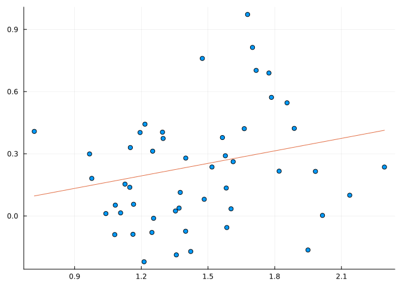
A constant model
The linear model has much wider applicability than the simple regression model, \(y_i = \beta_0 + \beta_1 x_i + \epsilon_i\). To see one example, we can fit the model \(y_i = \beta_0 + \epsilon_i\) using least squares:
lm(@formula(y ~ 1), (y=l,)) |> coef1-element Vector{Float64}:
1.462The estimate is the mean of l.
4.2.3 Local regression
The method of least squares used above is called “regression.” It was popularized by Galton (Galton 1886) along with the phrase “regression to the mean.” The method of local regression (LOESS, with SS meaning scatterplot smoothing) essentially fits a regression line (or a degree \(d\) polynomial) to parts of the data then stitches them together. The result is a curve that summarizes any trend in the data between the response variable and the explanatory variable. Figure 4.9 shows some locally fit regression lines on the left, and on the right an identified loess line to show that the loess line here mostly follows the local regression models. The “loess” line was added to with these commands from the Loess package, which are wrapped up into a function to call later:
import Loess # import so as not to conflict with other loaded packages
function loess_line!(p, x, y; normalize=true, span=0.75, degree=2, kwargs...)
model = Loess.loess(x, y; normalize=normalize, span=span, degree=degree)
us = range(extrema(x)..., length=100)
plot!(p, us, Loess.predict(model, us); kwargs...)
endloess_line! (generic function with 1 method)The default value of the degree keyword is 2 for a quadratic fit to the data.
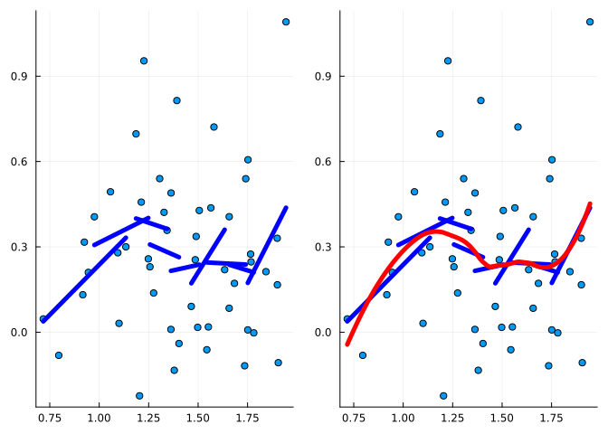
loess line added.4.2.4 Robust linear models
The formula for the slope of the simple regression coefficient depends on \(s_y/s_x\). The sample standard deviations may be influenced greatly by as few as one outlying value. That is, they are not very resistant to outliers. A theory of robust linear models has been developed which are useful in allowing a relaxation on the standard distributional assumptions, relaxations that accommodate data with more outliers. The RobustModels package implements a number of such models, of which we illustrate just MEstimator{TukeyLoss} without comment as to the implemented algorithm.
One way to view data sets that benefit from robust models is to envision a process where the measured response values are given by the value on a regression line plus some “normally” distributed error plus some “contaminated” error which introduces outliers.
To simulate that in our length and width data, we simply add in a contaminant to some of the terms below which appear in Figure 4.10 in the upper-right corner. That figure shows the least-squares regression line is influenced by the 3 contaminated points, but that robust regression line is not.
w′ = jitter(w)
l′ = jitter(l)
idx = sortperm(l′)
w′, l′ = w′[idx], l′[idx]
sigma_e = dispersion(res.model) # sqrt(deviance(res)/dof_residual(res))
inds = [45, 48, 50] # some indices
w′[inds] = w'[inds] .+ 5*sigma_e # contaminate 3 values
color = fill("blue", 50); color[inds] .= "red"
scatter(l′, w′; legend=:topleft, color=color)
fm = @formula(w ~ l)
res = lm(fm, (w=w′, l=l′))
us = range(minimum(l′), maximum(l′), 100)
plot!(us, GLM.predict(res, (l=us,)); linewidth=4, label="lm")
import RobustModels
estimator = RobustModels.MEstimator{RobustModels.TukeyLoss}()
res_robust = RobustModels.rlm(fm, (w=w′, l=l′), estimator)
plot!(us, RobustModels.predict(res_robust, (l=us,)); linewidth=4, label="rlm")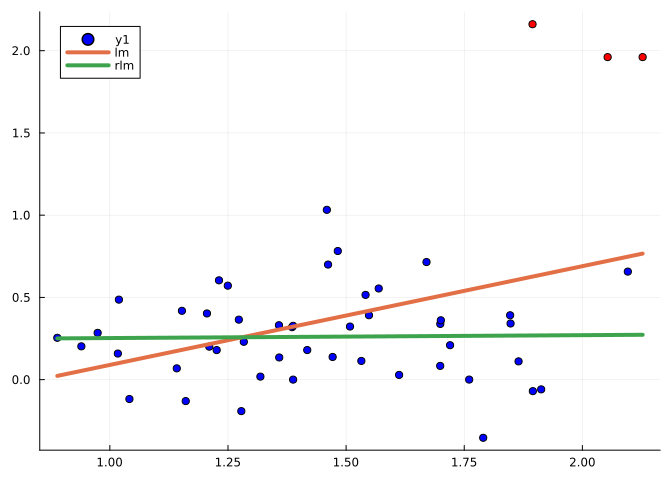
4.2.5 Prediction
In the definition of loess_line! and Figure 4.10 a predict method from various packages was used to plot the trend line. The pattern was similar: predict(model, (l=data,)) created \(y\) values for the given explanatory values.
The language comes from the usage of statistical models.
The explanatory “variable”, in general, may consist of 0, 1, or more variables. Examples with 0 or 1 for lm were given. It is not hard to envision in the iris data that the petal length might be influenced by the species, the petal width, and even details of the sepal sizes. The word explanatory hints that the \(y\) values should be somehow explained by the covariates. Of course, statistical data is typically subject to variability, so even if all covariates are equal, different responses need not be the same. A statistical model may account for this by expressing a relationship:
response = predicted + error
For our purposes, the “predicted” part comes from some parameterized function of the covariates and forms the structural model for the data. On average, it is assumed the errors are \(0\), but that an individual error introduces some randomness.
The parameters in the model are fitted by some process (such as lm) leaving the related decomposition
response = fitted + residual
In GLM and other packages within the Julia ecosystem, the aptly named generic fit method is used to fit a model.
The “fitted” and “residual” values are based on the data and are known quantities; the “predicted” and “error” are postulated and may be unknowable. It is common to use the identified model as estimates for predicted values.
In the above examples, the predict method was used to do just that. The syntax for predict may have seemed more complicated than needed, but the model may have many covariates, so the specification needs a means to identify them. A Tables compatible specification of the data used in the prediction is used, in the above that was a named tuple.
The modeling environment of Julia has these generic methods for the parts of a model:
predict(model, newdata): Make predictions for new values of the covariate(s).fitted(model): The predicted values for the covariate(s) used to identify the parameters in the model.response(model): The response valuesresiduals(model): The response values minus the fitted values
The residuals are not the errors, but give a sense of them. The residuals function returns the residual values for a model fit. For example, we have these summaries:
mean(residuals(res)), std(residuals(res))(0.0, 0.41497564411296994)(The mean of the residuals is always 0 for a linear model, a consequence of the method of least squares.)
4.2.6 Assessing the residuals
In the creation of Figure 4.10 the following value was used:
sigma_e = dispersion(res.model)0.4192760247125827This is the square root of the sum of the squared residuals (computed by deviance) divided by the degrees of freedom (in this case \(n-2\), but in general given by dof_residual):
mse = deviance(res) / dof_residual(res) # sense of scale
sqrt(mse)0.4192760247125827For the simple linear regression model, the value \(\sum e_i^2\) is minimized by the choice of the estimates for the \(\beta\)s. This value is called the SSE, or sum of squared errors (or the SSR, sum of squared residuals). It can be found from the residuals or the generic method deviance:
sum(ei^2 for ei in residuals(res)), deviance(res)(8.438034475141741, 8.438034475141741)The deviance gives a sense of scale, but does not reflect the size of the data set, \(n\). The residual degrees of freedom of a model is \(n-k -1\) where \(k\) is the number of variables. Assuming an intercept, in simple linear regression \(k=1\)
n = length(l) # or nobs(res)
n - 1 - 1, dof_residual(res)(48, 48.0)(More generally, this is \(n\) minus the number of columns in the model matrix, which for this model is one for the intercept and one for the \(x\) values.)
The mean squared error (MSE) is the ratio of the SSE and the degrees of freedom, or \((\sum e_i^2)/(n-k-1)\). This is like a sample variance for the error terms, the square root of it, like the standard deviation, a also measure of variability.
The residuals can be used to graphically assess the ability of the fitted model used to describe the data. There are a few standard graphics:2
- A fitted versus residuals plot. The residuals are the data less the structural part of the model. If the model fits well, the residuals should not show a pattern.
- A quantile plot of the residuals. For statistical inference, there are distributional assumptions made on the error values. This plot helps assess if typical assumption on the shape is valid.
- A scale location. For statistical inference, there are distributional assumptions made on the error values. This plot helps assess if typical assumption of equal variances is valid.
- Residuals versus leverage. As regression can be sensitive to influential outliers. This is assessed with Cook’s distance which measures the change if point is used to fit the data compared to if it is not.
The support for these graphics in Julia is not as developed as in R, say. As such, we create some simple functions for generating this plots.
We first define several helper functions:
using LinearAlgebra: diag
hat(res) = (X = modelmatrix(res); X * inv(crossmodelmatrix(res)) * X')
hatvalues(res) = diag(hat(res))
function rstandard(res)
es = [ei/sqrt(1-hi) for (ei, hi) in zip(residuals(res), hatvalues(res))]
s = dispersion(res)
es / s
endrstandard (generic function with 1 method)The hat function computes a matrix that arises in the regression model, its diagonal entries are returned by hatvalues. These are used to scale the residuals to produce the standardized residuals, computed by rstandard. The generic leverage, defined in StatsBase, is intended to compute what hatvalues does, but it currently doesn’t have a method defined in GLM.
The 4 basic diagnostic plots follow those returned by default in R, though the R versions offer more insight into outlying values. In Figure 4.11 the 4 graphics are shown for the “setosa” species data with PetalWidth modeled by PetalLength.
function fitted_versus_residuals(res)
p = plot(; legend=false)
scatter!(p, fitted(res), residuals(res);
xlab="Fitted", ylab="Residuals", title="Residuals vs. fitted")
loess_line!(p, fitted(res), residuals(res))
p
end
function quantile_residuals(res)
qqnorm(rstandard(res);
legend=false,
title = "Normal Q-Q",
xlab="Theoretical quantiles", ylab="Standardized residuals")
end
function scale_location_plot(res)
x, y = fitted(res), rstandard(res)
y = sqrt.(abs.(y))
p = plot(; legend=false)
scatter!(p, x, y;
title="Scale location",
xlab="Fitted", ylab = "Standardized residuals")
loess_line!(p, x, y)
p
end
function residual_leverage(res)
x, y = cooksdistance(res), rstandard(res)
p = plot(; legend=false)
scatter!(p, x, y;
title = "Residuals vs. leverage",
xlab="Leverage", ylab="Standardized residuals")
loess_line!(p, x, y)
p
endresidual_leverage (generic function with 1 method)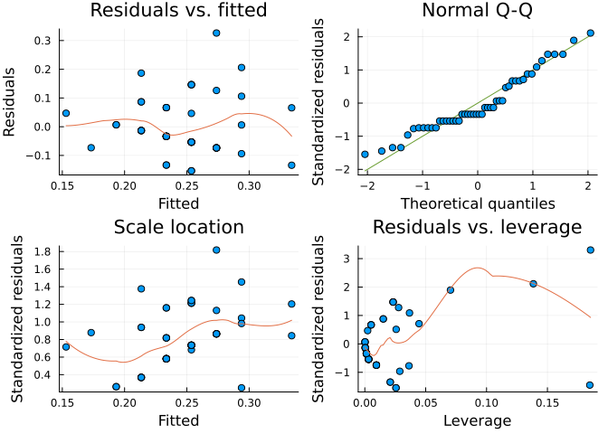
Alternatives
In the above, we created functions to compute some diagnostic values. These are also defined in the LinRegOutliers package (al. 2021) along with much else. However, the interface is not quite compatible with the model results of lm, so we didn’t leverage that work here.
4.2.7 Transformations
The lm function, as used above, expects linear relationships between the explanatory variable and the response variable. That is, a model of the type \(y = \beta_0 + \beta_1 x + \epsilon\). There may be data for which some mathematical transformation is necessary in order to get this structural form.
The animals data set, defined below, measures the body size and brain size of various species of animals. The brain size depends on the body size, but it seems to be non-linear and better modeled by \(e^y = e^{\beta_0 + \beta_1 x + \epsilon}\). In Figure 4.12 we can see scatter plots of the two data sets before and after a log transform.
animals = dataset("MASS", "Animals")
transform!(animals, [:Brain, :Body] .=> ByRow(log) .=> [:logBrain, :logBody])
p1 = @df animals scatter(:Body, :Brain; legend=false,
title="Brain by body", xlab="Body", ylab="Brain")
p2 = @df animals scatter(:logBody, :logBrain; legend=false,
title="log(Brain) by log(body)",
xlab="log(Body)", ylab="log(Brain)")
plot(p1, p2; layout = (@layout [a b]))#, size=fig_size_2)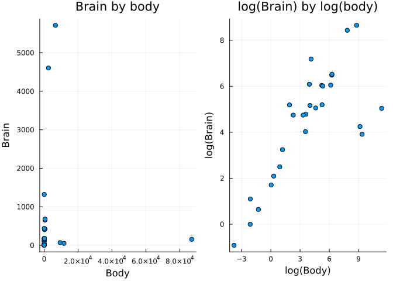
animals data before and after log transform of the body and brain variables.There is an automated group of transformations called power transformations; these are implemented in the BoxCoxTrans package. Its transform function identifies an appropriate monotonic transformation. We can see the results of the transformations of both variables here along with a regression line and a robust regression line:
import BoxCoxTrans
transform!(animals, [:Brain,:Body] .=> BoxCoxTrans.transform .=> [:bcBrain, :bcBody])
p = @df animals scatter(:bcBody, :bcBrain; label=nothing,
title = "Animals, Box-Cox transformed",
xlab = "box-cox Body", ylab = "box-cox Brain")
fm = @formula(bcBrain ~ bcBody)
res = lm(fm, animals)
estimator = RobustModels.MEstimator{RobustModels.TukeyLoss}()
res_robust = RobustModels.rlm(fm, animals, estimator)
us = range(extrema(animals.bcBody)..., length=100)
plot!(us, GLM.predict(res, (bcBody = us,)), linewidth=4, label="lm")
plot!(us, RobustModels.predict(res_robust, (bcBody = us,)), linewidth=4, label="rlm")
animals data after both the Body and Brain variables have been transformed through the Box-Cox method. This data set has 3 outliers that pull the lm regression line downward, but do not impact the robust regression line, which more accurately captures the trend for all but the 3 outliers (which happen to be dinosaur species).4.2.8 Grouping by a categorical variable
The iris data is an example of differences between the species, one more so than the other. The group argument to scatter instructs the coloring of the markers to vary across the values of the grouping variable, effectively showing three variables at once.
p_scatter = @df iris scatter(:PetalWidth, :PetalLength; group=:Species,
legend=false, alpha=0.33);In Figure 4.14 the basic scatter plot for petal width modeled by petal length is shown in the left figure along with a fitted regression line. We set an alpha value for the scatterplot to better see the regression lines. The line itself was prepared with:
m1 = lm(@formula(PetalLength ~ PetalWidth), iris)StatsModels.TableRegressionModel{LinearModel{GLM.LmResp{Vector{Float64}}, GLM.DensePredChol{Float64, LinearAlgebra.CholeskyPivoted{Float64, Matrix{Float64}, Vector{Int64}}}}, Matrix{Float64}}
PetalLength ~ 1 + PetalWidth
Coefficients:
───────────────────────────────────────────────────────────────────────
Coef. Std. Error t Pr(>|t|) Lower 95% Upper 95%
───────────────────────────────────────────────────────────────────────
(Intercept) 1.08356 0.072967 14.85 <1e-30 0.939366 1.22775
PetalWidth 2.22994 0.0513962 43.39 <1e-85 2.12838 2.33151
───────────────────────────────────────────────────────────────────────us = range(extrema(iris.PetalWidth)..., 100)
vs = predict(m1, (PetalWidth = us, ))
plot!(p_scatter, us, vs; title="iris data");The three clusters can influence the regression line fit to the scatter plot, that is species can be an influence, as would be expected. There are different ways for this expectation to be incorporated.
First, suppose we simply adjust the fitted lines up or down for each cluster. That is, there is some additive effect for each type of species. As a example of something we discuss at more length later, we can fit this model by including Species as an additive term:
m2 = lm(@formula(PetalLength ~ PetalWidth + Species), iris)StatsModels.TableRegressionModel{LinearModel{GLM.LmResp{Vector{Float64}}, GLM.DensePredChol{Float64, LinearAlgebra.CholeskyPivoted{Float64, Matrix{Float64}, Vector{Int64}}}}, Matrix{Float64}}
PetalLength ~ 1 + PetalWidth + Species
Coefficients:
───────────────────────────────────────────────────────────────────────────────
Coef. Std. Error t Pr(>|t|) Lower 95% Upper 95%
───────────────────────────────────────────────────────────────────────────────
(Intercept) 1.2114 0.0652419 18.57 <1e-39 1.08246 1.34034
PetalWidth 1.01871 0.152242 6.69 <1e-09 0.717829 1.31959
Species: versicolor 1.69779 0.180948 9.38 <1e-15 1.34018 2.05541
Species: virginica 2.27669 0.281325 8.09 <1e-12 1.7207 2.83269
───────────────────────────────────────────────────────────────────────────────The second row in the output of m2 has an identical interpretation as for m1 – it is the slope of the regression line. The first line of the output in m1 is the \(x\)-intercept, which moves the line up or down. Whereas the first of m2 is the \(x\) intercept for a line that describes just one of the species, in this case setosa. (A coding for the regression model with a categorical variable chooses one reference level, in this case “setosa.”). The 3rd and 4th lines are the slopes for the other two species.
We can plot these individually, one-by-one, in a similar manner as before, however when we call predict we include a level for :Species. The result is the middle figure in Figure 4.14.
p_scatter2 = deepcopy(p_scatter)
gdf = groupby(iris, :Species)
for (k,d) ∈ pairs(gdf) # GroupKey, SubDataFrame
s = string(k.Species)
us = range(extrema(d.PetalWidth)..., 100)
vs = predict(m2, DataFrame(PetalWidth=us, Species=s))
plot!(p_scatter2, us, vs; linewidth=5)
endow we identify different regression lines (slope and intercepts) for each cluster. This is done throuh a multiplicative model and is specified in the model formula of StatsModels with a *:
m3 = lm(@formula(PetalLength ~ PetalWidth * Species), iris)StatsModels.TableRegressionModel{LinearModel{GLM.LmResp{Vector{Float64}}, GLM.DensePredChol{Float64, LinearAlgebra.CholeskyPivoted{Float64, Matrix{Float64}, Vector{Int64}}}}, Matrix{Float64}}
PetalLength ~ 1 + PetalWidth + Species + PetalWidth & Species
Coefficients:
─────────────────────────────────────────────────────────────────────────────────────────────
Coef. Std. Error t Pr(>|t|) Lower 95% Upper 95%
─────────────────────────────────────────────────────────────────────────────────────────────
(Intercept) 1.32756 0.130933 10.14 <1e-17 1.06877 1.58636
PetalWidth 0.54649 0.490003 1.12 0.2666 -0.422038 1.51502
Species: versicolor 0.453712 0.373701 1.21 0.2267 -0.284935 1.19236
Species: virginica 2.91309 0.406031 7.17 <1e-10 2.11054 3.71564
PetalWidth & Species: versicolor 1.32283 0.555241 2.38 0.0185 0.225359 2.42031
PetalWidth & Species: virginica 0.100769 0.524837 0.19 0.8480 -0.936611 1.13815
─────────────────────────────────────────────────────────────────────────────────────────────The first four coefficients are interpreted similarly to those for m2, the remaining 2 summarize the interaction between the petal width and the species type.
We can produce a graphic, the right-most figure in Figure 4.14:
p_scatter3 = deepcopy(p_scatter)
gdf = groupby(iris, :Species)
for (k,d) ∈ pairs(gdf) # GroupKey, SubDataFrame
s = string(k.Species)
us = range(extrema(d.PetalWidth)..., 100)
vs = predict(m3, DataFrame(PetalWidth=us, Species=s))
plot!(p_scatter3, us, vs; linewidth=5)
end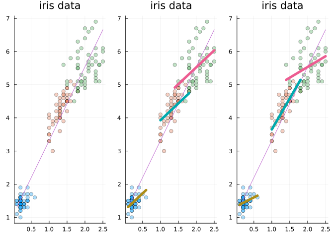
iris data set. The right-hand figure includes the regression line fit to all the data. The middle one fits regression lines identified through an additive model that includes the species. The slopes are parallel, but the lines have an additive shift. The right figure shows a multiplicative model wherein the slopes and intercepts for each species are chosen.